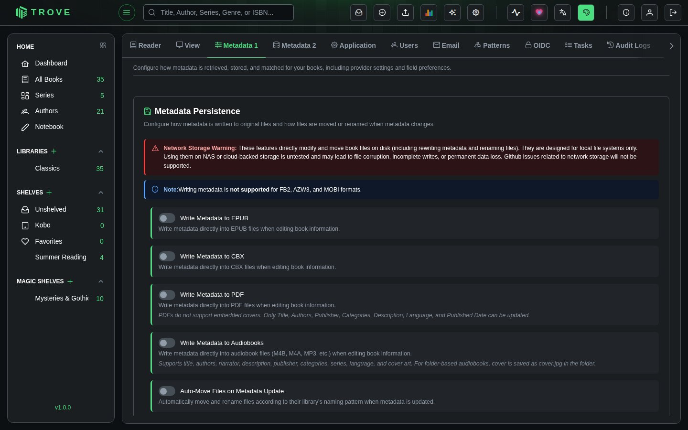
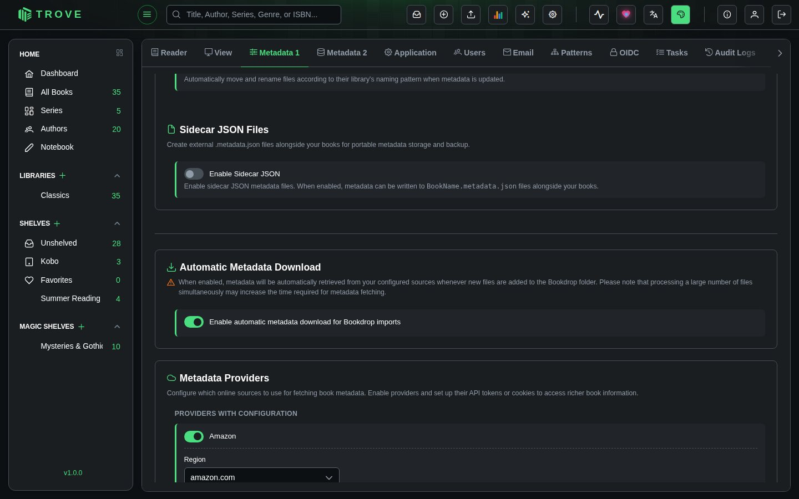
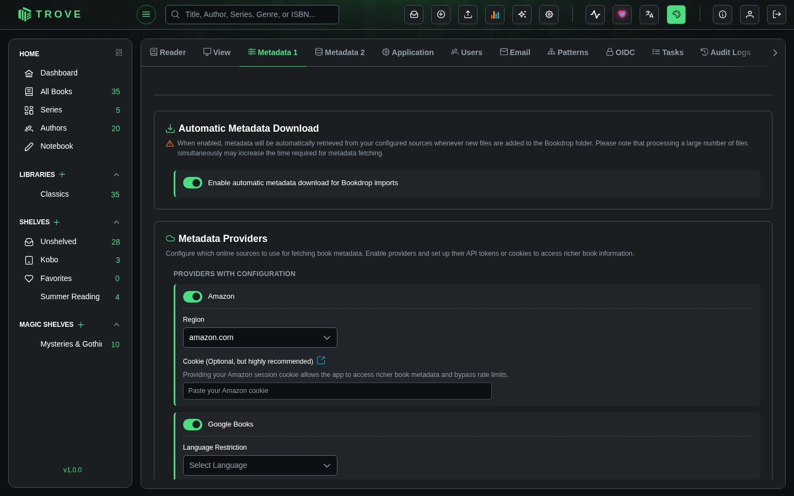
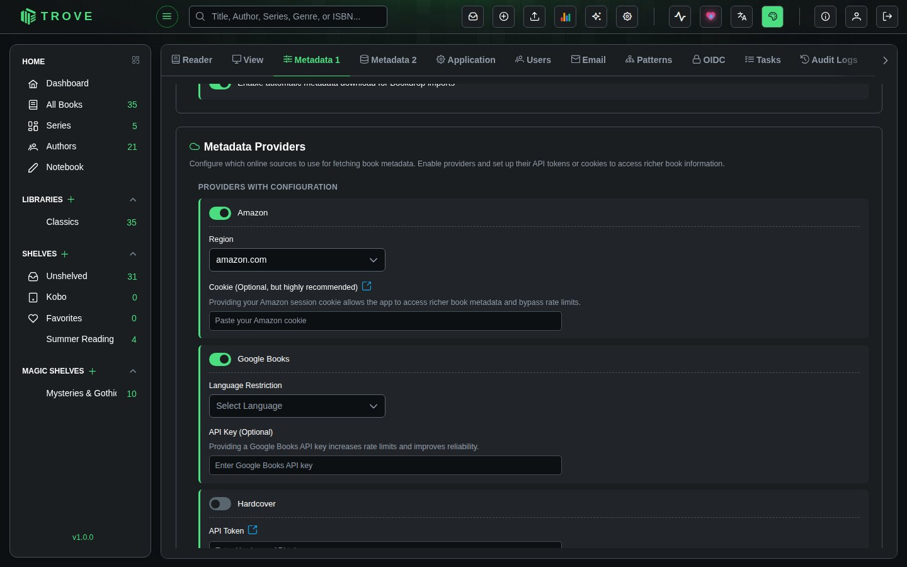
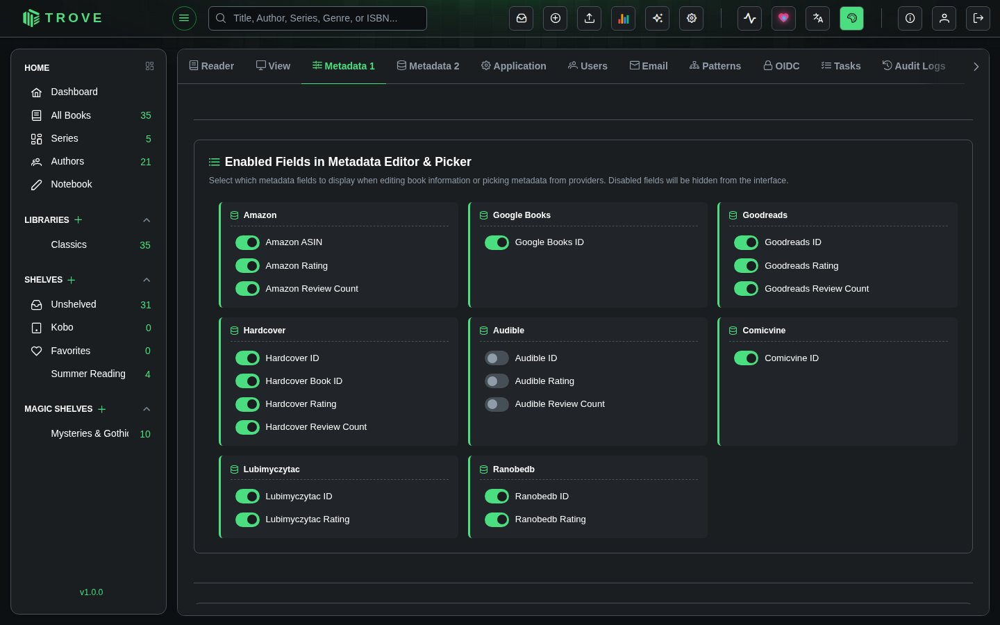
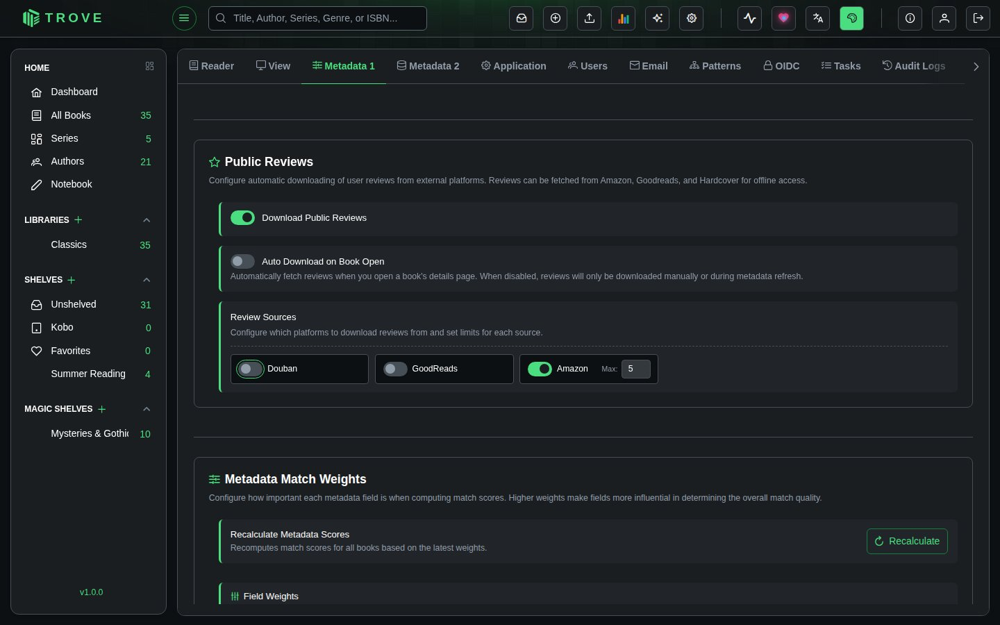

Metadata Settings
Configure how metadata is retrieved, stored, and matched for your books, including provider settings, file persistence, sidecar backups, and field preferences.
Navigate to Settings > Metadata 1 to access this page. Requires the Manage Metadata Configuration permission.
Metadata Persistence
Configure how metadata is written back to original book files and how files are moved or renamed when metadata changes.

Write Metadata to EPUB
When enabled, Trove writes metadata directly into EPUB files whenever you edit book information. All standard metadata fields are supported, including title, authors, description, publisher, series, ISBN, language, genres, and cover image.
Write Metadata to CBX
When enabled, writes metadata directly into CBX files (CBZ, CBR, CB7) when editing book information. Useful for keeping comic book archives self-contained with their metadata.
Write Metadata to PDF
When enabled, writes metadata into PDF files. PDFs have limited metadata support compared to EPUB. Only the following fields can be updated: Title, Authors, Publisher, Categories, Description, Language, and Published Date. PDFs do not support embedded covers.
Write Metadata to Audiobooks
When enabled, writes metadata directly into audiobook files (M4B, M4A, MP3, etc.) when editing book information. Supports title, authors, narrator, description, publisher, categories, series, language, and cover art. For folder-based audiobooks, the cover is saved as cover.jpg in the folder.
Auto-Move Files on Metadata Update
When enabled, Trove automatically moves and renames files according to their library's file naming pattern whenever metadata is updated. For example, if your naming pattern includes the author and title, renaming a book or correcting an author will cause the file to be relocated to match the new metadata.
Sidecar JSON Files
Create external metadata files alongside your books for portable metadata storage and backup.

When enabled, Trove writes a BookName.metadata.json file next to each book file containing all of its metadata in a structured JSON format. This provides a portable, human-readable backup of your metadata that lives alongside the book files themselves.
What's Included in Sidecar Files
Sidecar JSON files contain comprehensive metadata:
- Standard fields: Title, subtitle, authors, publisher, published date, description, ISBN-10, ISBN-13, language, page count, categories, series information
- Provider identifiers: Amazon ASIN, Goodreads ID, Google Books ID, Hardcover ID, Comicvine ID, Lubimyczytac ID, Ranobedb ID, Audible ID
- Ratings: Ratings and review counts from Amazon, Goodreads, Hardcover, Lubimyczytac, Ranobedb, and Audible
- Additional fields: Moods, tags, age rating, content rating, narrator, abridged status, comic-specific metadata
- File metadata: Version number, generation timestamp, and source identifier
Automatic Metadata Download
Configure whether metadata is automatically fetched from your configured providers when new books arrive through Bookdrop.

When enabled, Trove will automatically retrieve metadata from your configured sources whenever new files are added to the Bookdrop folder. The metadata fetch uses the provider priority configuration set in the Fetch Configuration page.
Metadata Providers
Configure which online sources to use for fetching book metadata. Enable providers and set up their API tokens or cookies to access richer book information.

Providers are split into two groups:
Providers with Configuration
These providers require additional setup (API keys, region selection, or cookies) before they can be used effectively.
| Provider | Configuration | Details |
|---|---|---|
| Amazon | Region, Cookie | Select your Amazon region from 19 available domains (amazon.com, amazon.de, amazon.co.uk, etc.). Providing your Amazon session cookie is optional but highly recommended as it unlocks richer book metadata and bypasses rate limits. See the Amazon Cookie guide. |
| Google Books | Language Restriction, API Key | Optionally restrict results to a specific language (Dutch, English, French, German, Italian, Japanese, Polish, Portuguese, Spanish, Swedish). Providing a Google Books API key increases rate limits and improves reliability. |
| Hardcover | API Token | Requires an API token from hardcover.app/account/api. See the Hardcover API guide for setup instructions. |
| Comic Vine | API Key | Requires a Comic Vine API key for accessing comic book and graphic novel metadata. |
| Audible | Region | Select your Audible region from 10 available domains (audible.com, audible.co.uk, audible.de, etc.) for audiobook-specific metadata. |
Ready-to-Use Providers
These providers work out of the box with no additional configuration. Simply toggle them on or off.
| Provider | Specialty |
|---|---|
| Goodreads | Community ratings, series data, comprehensive genres |
| Douban | Asian literature (Chinese, Japanese, Korean titles) |
| Lubimyczytac | Polish literature and book ratings. See the LubimyCzytac guide. |
| Ranobedb | Light novels and web novel metadata. See the RanobeDB guide. |
Enabled Fields in Metadata Editor & Picker
Select which provider-specific metadata fields to display when editing book information or picking metadata from providers. Disabled fields are hidden from the interface entirely.

Each provider has its own set of unique fields that can be toggled individually:
| Provider | Available Fields |
|---|---|
| Amazon | Amazon ASIN, Amazon Rating, Amazon Review Count |
| Google Books | Google Books ID |
| Goodreads | Goodreads ID, Goodreads Rating, Goodreads Review Count |
| Hardcover | Hardcover ID, Hardcover Book ID, Hardcover Rating, Hardcover Review Count |
| Comicvine | Comicvine ID |
| Lubimyczytac | Lubimyczytac ID, Lubimyczytac Rating |
| Ranobedb | Ranobedb ID, Ranobedb Rating |
| Audible | Audible ID, Audible Rating, Audible Review Count |
Public Reviews
Configure automatic downloading of user reviews from external platforms. Reviews can be fetched from Amazon, Goodreads, and Hardcover for offline access within Trove.

Download Public Reviews
The master toggle that enables or disables review downloading across all providers. When disabled, the entire reviews section is hidden from book detail views.
Auto Download on Book Open
When enabled, Trove automatically fetches reviews from your configured sources whenever you open a book's details page. When disabled, reviews are only downloaded manually or during a metadata refresh operation.
Review Sources
Each review provider can be individually enabled or disabled, and you can configure the maximum number of reviews to fetch per provider (1 to 10). The available sources are:
| Source | Default State | Description |
|---|---|---|
| Amazon | Enabled | User reviews from Amazon, pulled alongside other Amazon metadata |
| Goodreads | Disabled | Community reviews from Goodreads |
| Hardcover | Disabled | Reviews from the Hardcover reading community |
Saving
Click Save Configurations at the bottom of the page to persist all changes across every section. The button saves metadata persistence settings, provider configurations, field visibility, and review settings in a single operation.
Notes
- All configuration changes are recorded in the Audit Log.
- Provider settings on this page (Metadata 1) control which providers are available. The Fetch Configuration page (Metadata 2) controls which providers are used for each field and in what priority order.
- Sidecar JSON files use version "1.0" format and are generated by Trove. They can be read back during sidecar import operations.
- Metadata persistence and auto-move features require the files to be on a local file system. Network storage is not supported.
- Enabling a provider here does not automatically assign it to any metadata fields. You must configure provider priorities on the Fetch Configuration page separately.
- The Manage Metadata Configuration permission is required to access and modify all settings on this page.